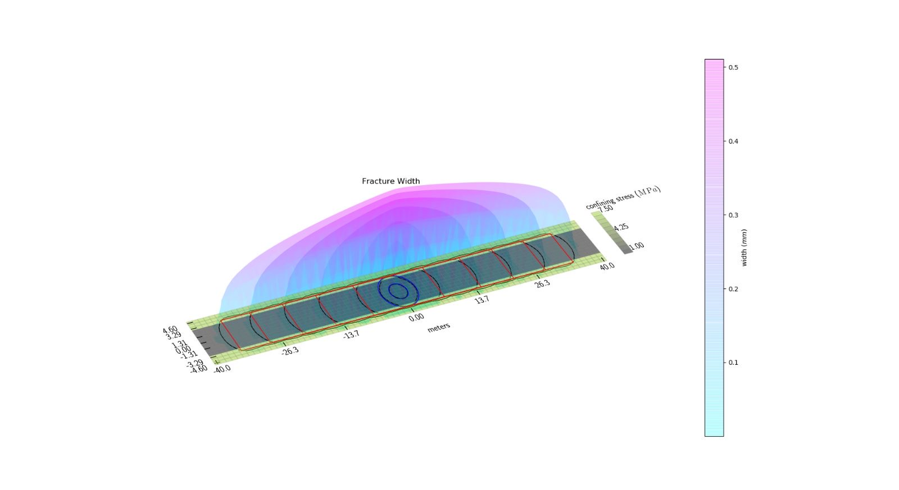

Industry Experience
Introduction
Over two summers, I have worked both for Tesla and for a small startup, Sage Geosystems. My experiences in both places has allowed me to be flexible to all kinds of work environments and team styles. Both required me to learn quickly on the job, adapt rapidly to new constraints, and work independently to meet objectives. Though I can't share everything I've worked on, read on to learn about some of the skills I developed at both places!
Tesla-
Capability Development Test Intern
This summer, I am interning at Tesla on the Capability Development Team. As part of my role, I support various testing teams by designing and building custom test fixtures and procedures. In this role, I have been establishing and improving test suites and fixtures for high static load and cyclic loading testing of various components. I have also helped support the creation of development mules for unreleased vehicle accessories.
My team develops test solutions rapidly on-demand, pushing me to constantly learn about and gain proficiency with new systems. My projects have required me to create custom electro-mechanical, pneumatic, and static systems that not only perform well, but integrate well into existing infrastructure and minimize disruption to testing schedules for vehicle software and hardware testing teams.
One of the most useful skills I have been developing on this team is the ability to use assembly-based modeling to create efficient, machinable, and adaptable testing mechanisms. I have also been enjoying turning these models into real assemblies after quickly iterating on my designs and sourcing parts.
These test systems require me to create custom electro-mechanical, pneumatic, and static systems that integrate with existing infrastructure. I design these systems in CATIA, where I use assembly-based modeling to create efficient, machinable, and adaptable testing mechanisms.
Stay tuned for more updates as I wrap up this internship!
Sage Geosystems-
Engineering and Modeling Intern
Last summer, I worked as an Engineering and Modeling Intern for a geothermal energy startup based out of Houston called Sage Geosystems. Working for a company during Series A fundraising meant that I took on a lot of responsibility and had a lot of independence. I worked directly with the Director of Simulation and Modeling to develop Sage’s proprietary digital twin technology, called GeoTwin . This technology is integral to Sage’s strategy in developing economically viable and scalable geothermal systems.
During my time at Sage, I developed a model for heat transfer and fluid dynamics for a geothermal well using Python, Octave and R. I developed a model for heat transfer and fluid dynamics of a geothermal well step-by-step to match real well test data using Python, Octave, and R. My model allowed the company to gain invaluable insights into the geometric, formation, and fluid flow properties within the well—properties that define a well’s ability to produce power. I went further to match my model against multiphysics simulations in COMSOL as well as known analytical solutions.
 A visualization of one of the models I ran using PyFrac, a Python library for modeling geothermal wells.
I was very thankful that I had my first internship at Sage as I grew a lot as an engineer. I learned key lessons in working around limitations in resources and budget. I became creative and flexible as projects rapidly changed size and scope. I turned imperfect data into tangible insights on geothermal well feasibility. I developed models quickly, but I also learned how to be rigorous with my simulations by validating multiple stages of the process.
All in all, the energy and vibrancy of a startup like Sage is something that I aspire to have in my workplace in the future.